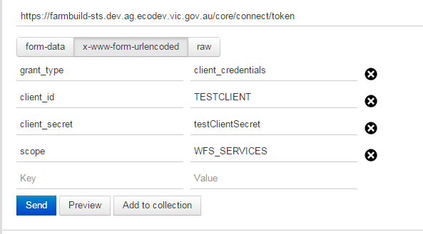
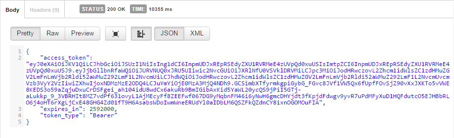

All requests to the Farm Build Services require access tokens. You can acquire an access token this ways:
-
OAuth: ClientId + Client Secret (API Key) + Scope post via Callbacks—recommended for Web Apps.
Refer the image on the input for the payload.
-

OAuth2 Endpoints:
-
https://farmbuild-sts.dev.ag.ecodev.vic.gov.au/core/connect/token
-
The response is an authorized access token depending on the scopes. Current Farm Build Services has 3 scopes as below.
The (third-party) application obtain the token from the Farm Build Identity Server and access the Web Services
based on the scopes.
-

Farm Build Scopes:
-
WFS Services: WFS_SERVICES
-
Soil Area Services: SOIL_AREA_SERVICES
-
Climate Data Services: CLIMATE_DATA_SERVICES